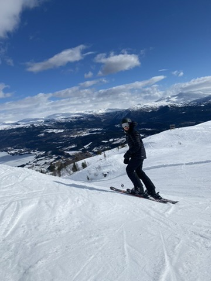

Bildegalleri


Jeg er en aktiv og sporty person som elsker å være i bevegelse. Trening er en stor del av hverdagen min, og jeg trives best når jeg får brukt kroppen og utfordret meg selv fysisk.
Det som betyr aller mest for meg er familie og venner. Jeg setter stor pris på å tilbringe tid med de jeg er glad i, enten det er hjemme, på tur eller bare en vanlig kveld sammen.
Når det kommer til fritidsinteresser, er jeg ekstremt lidenskapelig opptatt av Manchester United. Jeg følger laget tett og gleder meg alltid til kampdag! Gaming er også en stor del av livet mitt – det er en fantastisk måte å slappe av på og konkurrere med venner.
Jeg har prøvd meg på mange forskjellige idretter gjennom årene:
Alle disse erfaringene har lært meg mye om utholdenhet, samarbeid og å aldri gi opp.